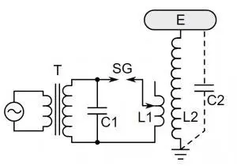
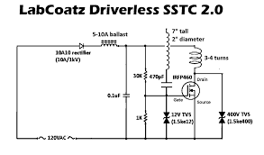
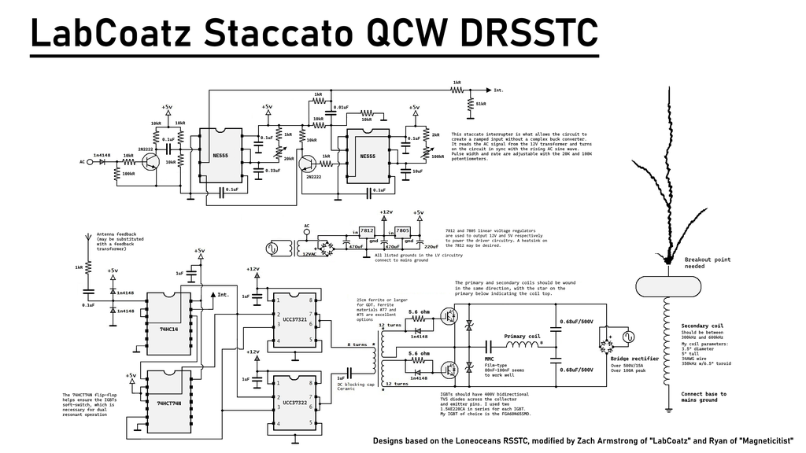

echo "# TeslaCoiltest2" >> README.md
git init
git add README.md
git commit -m "first commit"
git branch -M main
git remote add origin https://github.com/ansh4jp-design/TeslaCoiltest2.git
git push -u origin main
Tesla Coil
Nikola Tesla and Tesla Coils
Introduction to Nikola Tesla
Nikola Tesla (1856–1943) was one of the most brilliant inventors, engineers, and visionaries in modern history.
Born in Smiljan, which was then part of the Austrian Empire (modern-day Croatia), Tesla went on to revolutionize
the way we generate, transmit, and use electricity. He is best known for his work on alternating current (AC) systems,
the invention of the Tesla coil, radio technologies, and numerous experiments that were decades ahead of his time.
Tesla's mind was filled with ideas of harnessing wireless power, creating global communication networks, and
developing machines that would change civilization. One of his most iconic creations is the Tesla coil,
a device capable of generating extremely high voltages and producing spectacular electrical discharges.
What is a Tesla Coil?
A Tesla coil is a high-voltage resonant transformer invented by Nikola Tesla in the late 19th century.
It is designed to produce very high voltages, low currents, and high-frequency alternating
current electricity. The device typically consists of two main parts: a primary coil and
capacitor that store and release energy, and a secondary coil with many turns of wire,
often topped with a metal toroid or sphere. When the primary circuit discharges, it excites
the secondary coil into resonance, generating powerful oscillations. This process creates
spectacular visible electrical discharges, such as long arcs and lightning-like sparks,
that can reach several feet in length. Tesla coils were originally developed for experiments
in wireless power transmission, radio, and high-frequency current research. Today,
they are mostly used for educational demonstrations, science museums,
and entertainment, showing the fascinating power of electricity and Tesla’s
groundbreaking vision of wireless energy.
Tesla coils can be divided into several main types: the Spark Gap Tesla Coil (SGTC), the Solid State Tesla Coil (SSTC),
and the Double Resonant Solid State Tesla Coil (DRSSTC). Each design improves upon the last in terms of efficiency, control,
and performance.
1. Spark Gap Tesla Coil (SGTC)
The Spark Gap Tesla Coil is the earliest and most traditional design. It uses a spark gap to switch
the energy stored in capacitors
into the primary coil, which resonates with the secondary coil. SGTCs are powerful and capable
of producing very long arcs,
but they are also less efficient, very loud, and generate a lot of electrical noise.
This design, although the most iconic, is not as effecient as its succesors, who take many times less the input,
and yet delivers arcs of the same size or larger.
| Component |
Job |
| Power Supply |
Charges the capacitor to high voltage. |
| Capacitor Bank |
Stores energy to be released in bursts. |
| Spark Gap |
Acts as a switch, releasing energy into the primary coil. |
| Primary Coil |
Forms an LC circuit with the capacitor, transfers energy to the secondary. |
| Secondary Coil & Toroid |
Produces high-voltage discharges into the air. |

Here is a schematic of a simple, SGTC, consisting of a capacitor, transformer, coils and of cource SG,
the 2nd capacitor you see is a natrual capacitor closing the circut between the primary and secondary coil.
this circut is very simple and easy to make and understand
however, with an input power of 180V DC, the arc lenght is only about 5-12cm. This is very short compared
to its brothers/succesors who can easliy make twice or even quadrouble the arc size, however with much more
complex circuts.
2. Solid State Tesla Coil (SSTC)
The Solid State Tesla Coil (SSTC) replaces the noisy and inefficient spark gap of
earlier Tesla coils with modern semiconductor switches such as MOSFETs or IGBTs. These devices
act as fast, reliable electronic switches that drive the primary coil at high frequency, offering,
far greater control and efficiency than spark gaps ever could. By directly feeding oscillations into the primary, SSTCs eliminate the mechanical limitations of older designs and allow compact, lightweight construction.
Although SSTCs are quieter, more efficient, and more
compact than SGTCs, they typically produce shorter sparks. This is
because an SSTC usually lacks a resonant tank circuit on the primary side, meaning that
the power delivered is limited compared to the resonant energy build-up in an SGTC. However,
what SSTCs sacrifice in raw spark length, they make up for in controllability and reliability.
Hobbyists often favor SSTCs because they are simpler to operate and can be built in smaller sizes
that still produce impressive arcs. With proper design, SSTCs can be made safer to use, though
they still operate at dangerous voltages and currents. One of their most attractive features is the ability to play music. By modulating the drive signal with audio input, the Tesla coil’s sparks reproduce tones and rhythms, creating the famous “singing Tesla coil.” This capability makes SSTCs popular in educational demonstrations and live performances
, where both science and entertainment come together in a dramatic display of controlled high voltage.
SSTCs are popular among hobbyists because they are easier to control, safer to operate (though still dangerous),
and capable of being modified to play music. A musical SSTC can modulate its output using audio signals, creating
the famous “singing Tesla coil.”
| Component |
Job |
| MOSFETs/IGBTs |
Switch on and off the primary coil electronically at high frequencies. |
| Driver Circuit |
Controls timing and ensures resonance with the secondary. |
| Primary Coil |
Induces oscillations in the secondary coil. |
| Secondary Coil & Toroid |
Generates arcs, corona, or plasma discharges. |


As you can see, this is a not so simple, SSTC circut diagram/shcematic, this circut sure is very
complex until you see the DRSSTC shcematic... this circut, really repersents the SSTC as it consists
of a driver circut, interrupter circut and the other components mentioned above(needs also mentioned
above). There is a much simpler circut dubbed the slayer exciter(for its mosfet killer feature *😉*
but it does not include a driver and an interrupter is optional, the circut is also called a driverless
SSTC,as mentioned above it is MUCH more simple than the avrge SSTC. its image can be seen on the right, the arc lenght
for the SSTC is 30cm+ and for the driverless 20cm+ due to the fact that the current and circut osillates
at the natrual reasonate freqency of the coils.
3. Double Resonant Solid State Tesla Coil (DRSSTC)
After the development of SGTCs and later SSTCs, the Dual Resonant Solid State Tesla Coil (DRSSTC) emerged as a
powerful and efficient evolution of Tesla coil design. While SGTCs rely on noisy spark gaps and SSTCs use
transistors to
directly drive the secondary coil, the DRSSTC takes the concept further by tuning both the primary and
secondary circuits to resonate at the same frequency. This “dual resonance” allows for highly efficient
energy transfer, enabling DRSSTCs to generate much longer and more dramatic arcs than standard SSTCs, often
rivaling or exceeding traditional spark gap coils in performance.
A DRSSTC uses IGBTs (Insulated Gate Bipolar Transistors) or similar high-power semiconductor switches to pulse the
primary coil with controlled bursts of energy. A feedback system locks the driver to the exact resonant frequency
of the secondary coil, ensuring stability as the coil operates. An interrupter circuit is almost always used, both
to protect the switching devices from excessive heating and to allow control over pulse length and repetition.
This also opens the door for musical modulation, making DRSSTCs the most common type of “singing Tesla coil” seen
in live demonstrations and performances.
Although the design offers superior efficiency and arc length compared to SSTCs, DRSSTCs are more challenging to
build. They demand precise tuning, careful protection of electronic components, and well-chosen IGBTs capable of
withstanding extreme current spikes. When executed correctly, however, a DRSSTC represents the peak of Tesla coil
technology, combining scientific precision with spectacular visual and musical displays.
| Component |
Job |
| IGBTs |
Switches and feeds the current through the primary coil with high efficiency. |
| Primary Resonant Tank |
Consists of a primary coil and capacitor tuned to the same frequency as the secondary. |
| Secondary Coil & Toroid |
Produces extremely high voltage Resulting in electrical discharge |
| Driver & Feedback Circuit |
Maintains resonance and protects the system from overload. |

Here we have a "simple" DRSSTC schematic.... if you try or even attempt to make this, your crazy,
good luck, have you lost ur mind?, and can we be friends if you do it *😉😉* ill do anything*😉😉😉*
if you do not make it right, I am a 12 year old child, which explains the miss spelled words*😉* and get away you old
creep... or ill call the police.... to motivate you arc lenght of this circut is 4x the coil lenght or
about 50 frickin centi meters+....
THANKY YOU!
If you made the DRSSTC or SSTC*😉* or just read this website out of sympathy or just like tesla coil,
if you failed in making the SSTC I feel you.. if you failed in the DRSSTC your crazy for even thinking
and trying to make it in the first place.
FOR CLASSMATES
Goodluck on the test*😉*